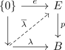
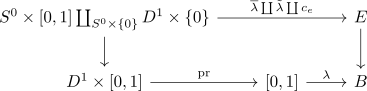
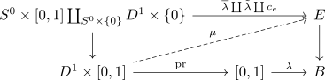
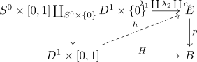
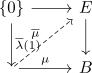

fibre functor from the fundamental groupoid of a serre fibration
Proposition
Let $p: E \rightarrow B$ be a serre fibration. Then there exists a functor
where $\overline{\lambda}$ is defined as

for a choosen preimage $e$
Proof
welldefined map
choice of $\overline{\lambda}$
Let $\overline{\lambda}_1, \overline{\lambda}_2$ be such lifts.
Then consider
then

By serre fibration and lifting problem of a relative cw complex we get a lift

Then consider
as path in $p^{-1}[b_1]$ from $\overline{\lambda_1}, \overline{\lambda_2}$
choice of $\lambda$
Let $\lambda_1, \lambda_2$ be different, but homotopic maps. Then choose a homotopy relative endpoints $H: D^1 \times [0,1] \rightarrow B$ relative to endpoints
This results in the lifting problem

Then
i sa path in $p^{-1}[b]$, as $h(-,1) = \mathrm{const}_b$ since the homotopy $H: D^1 \times [0,1] \rightarrow B$ is relative endpoints, from $\lambda_1(1)$ to $\lambda_2(1)$
choice of fibre $e$
functorality
identity
Note that a representative of the identity is given by the constant path. Here choosing a fibre and taking the constant path on the fibre suffices
composition
Given two representative classes of paths
\begin{displaymath}
\begin{tikzcd}
\{0\} \arrow[]{r}{e} \arrow[]{d}{} & E \arrow[]{d}{} \\
[0,1] \arrow[]{r}{\lambdo} \arrow[dashed]{ru}{\overline{\lambda}} & B
\end{tikzcd}
\end{displaymath}